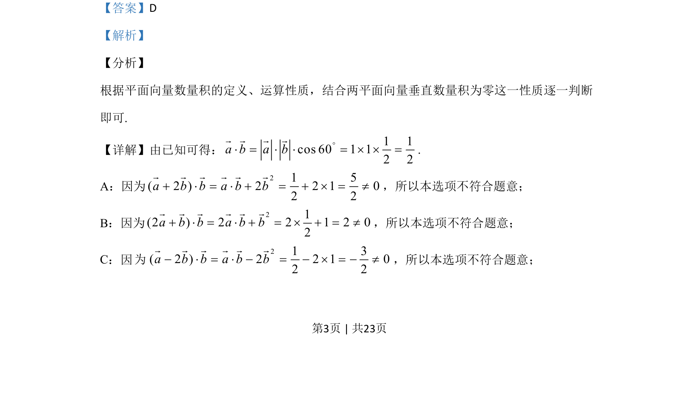
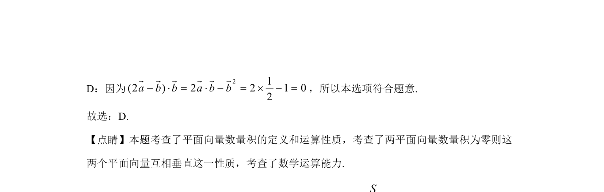

考点：平面向量数量积 向量垂直 数学运算
本题通过计算平面向量的数量积，判断两向量是否垂直。


📄 原 PDF 第 3 页：
素材/真题/吉林/2008-2024·（吉林）数学高考真题/2020年高考数学试卷（文）（新课标Ⅱ）（解析卷）.pdf
5.已知单位向量a，b的夹角为60°，则在下列向量中，与b垂直的是（ ） A. a+2bB. 2a+bC. a–2bD. 2a–b
【答案】D 【解析】 【分析】 根据平面向量数量积的定义、运算性质，结合两平面向量垂直数量积为零这一性质逐一判断 即可. 【详解】由已知可得： 1 1cos 60 1 12 2a b a b°× = × × = ´ ´ =r r r r . A：因为 21 5( 2 ) 2 2 1 02 2a b b a b b+ × = × + = + ´ = ¹r r r r r r ，所以本选项不符合题意； B：因为 21(2 ) 2 2 1 2 02a b b a b b+ × = × + = ´ + = ¹r r r r r r ，所以本选项不符合题意； C：因 21 3( 2 ) 2 2 1 02 2a b b a b b- × = × - = - ´ = - ¹r r r r r r ，所以本选项不符合题意； 的 为